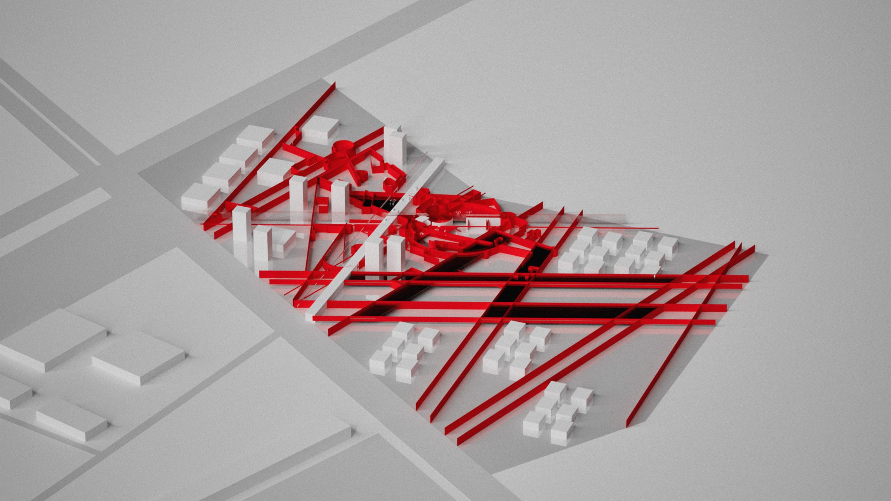

Form, Space, and Urbanism
A walkable housing society for Lahore

A housing society planned around the street, not the plot. The streets of Androon Lahore are taken apart and rebuilt as a network of bridges, ramps and stairs that people want to walk.
Following Jane Jacobs, the project treats lively streets as what makes a neighbourhood safe and alive. The Badshahi Mosque, the Lahore Fort and the old city's street network are abstracted and laid over the grid of a new society on the edge of Lahore. The plan mixes housing for every income group with markets, fields, parks and public space.
[brief]
Design and plan an urban housing society that fosters inclusive, sustainable and culturally vibrant communities, and addresses the diverse socio-economic needs of people in Lahore.
The masterplan mixes housing for low, middle and high income groups with shared community spaces open to everyone, including the elderly, children and people with disabilities. Local markets, small businesses and co-working hubs support local employment. Public-private partnerships and community-led initiatives keep the society financially viable and give residents a say in it.
| Use | Area (sq ft) | Share |
|---|---|---|
| Open spaces | 719,171 | 34% |
| Residential | 638,190 | 30% |
| Roads and circulation | 480,386 | 23% |
| Commercial | 108,970 | 5.2% |
| Farming: market and fields | 87,993 | 4% |
| Mosque | 44,673 | 2% |
| Services | 41,358 | 2% |
| Plot | Units | Area (sq ft) |
|---|---|---|
| 7 marla | 158 | 248,850 |
| 10 marla | 56 | 126,000 |
| 1 kanal | 18 | 81,000 |
| Apartments | 40% of housing area | 182,340 |
[site]
The site is on Burki Road, opposite DHA Phase VI, on the eastern edge of Lahore. It sits between farmland and the planned grid of a new housing society, so it faces the choice between the endless grid and something more alive.
[concept]
The project starts from Jane Jacobs' critique of conventional planning: vibrant streets make cities safe and lively. It looks for that street life in the organic movement of people through the markets and neighbourhoods of Androon Lahore.
Walkability is the core of the design. Ramps, bridges and staircases improve access, and they also mark striking thresholds through the community. They break the monotony of the built environment and invite residents to explore.
[process]
The first phase steps away from conventional planning. Shapes from Androon Lahore are broken down to their most essential state: the Badshahi Mosque, the Lahore Fort and the street network of the old city. As in most of the studio's work, the aim is to capture the essence of something rather than imitate it or place it as it is.
The shapes of the mosque and the fort are cut loose from the road network, then sheared, rotated, dismantled and disfigured. The result is a new architectural system that keeps the original sense of the shapes. These drawings are then superimposed on the site together with the surrounding grid.
The speculative phase gives the abstract shapes physical form, to understand both the masses and the space they leave around them. The circular plane, for instance, became a pedestrian bridge looking over a circular central park.
[speculative urbanism]
[from fragment to building]
[the masterplan]
The plan holds residences in 7 marla, 10 marla and 1 kanal plots, along with apartments, commercial blocks and offices. Its public spaces include parks, a central public park and a site-integrated playground. A farmers' market sits beside working agricultural fields. The mosque, graveyard, library and multipurpose courts are spread through the plan, with security, fire, water and waste services at the edges.
A red pedestrian network of bridges, ramps and stairs threads through the housing and over the road. It ties the circular park, the amphitheatre, the market and the commercial core together, so residents can walk the whole society.
[drawings]
Drawings are not to scale.
[views]
Views at street level and from above, kept in white with the pedestrian network in red.